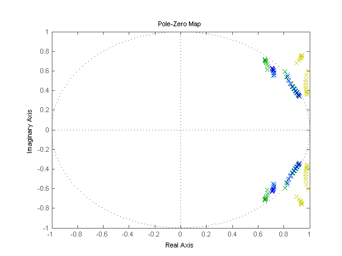

Contents
Example 18: Discretization of continuous LPV model of wing flutter
close all; clear; clc;
Wing flutter model
% Numerical values of parameters a = -0.6847; b = 0.135; mw = 2.049; mt = 12.387; rho = 1.225; ch = 27.43; ca = 0.036; cla = 6.28; clb = 3.358; cma = (0.5+a)*cla; cmb = -0.635; xa = (0.0873-(b+a*b))/b; Ia = 0.0517+mw*xa^2*b^2; kh = 2844.4; ka = 2.84; % System variables d = (mt*Ia-mw^2*xa^2*b^2); % System matrices for continuous-time A0 = [0 0 1 0; 0 0 0 1; -Ia*kh/d +ka*mw*xa*b/d -Ia*ch/d +mw*xa*b*ca/d +mw*xa*b*kh/d -(mt/d)*ka +mw*xa*b*ch/d -mt*ca/d]; A1 = [0 0 0 0; 0 0 0 0; 0 0 -(Ia*rho*b*cla+mw*xa*rho*b^3*cma)/d -(Ia*rho*b^2*cla*(0.5-a)+mw*xa*rho*b^4*cma*(0.5-a))/d; 0 0 (mw*xa*rho*b^2*cla + mt*rho*b^2*cma)/d (mw*xa*rho*b^3*cla*(0.5-a)+mt*rho*b^3*cma*(0.5-a))/d]; A2 = [0 0 0 0; 0 0 0 0; 0 -(Ia*rho*b*cla+mw*xa*b^3*rho*cma)/d 0 0; 0 (mw*xa*b^2*rho*cla+mt*rho*b^2*cma)/d 0 0]; B0 = [0; 0; 0; 0]; B1 = [0; 0; 0; 0]; B2 = [0; 0; (-Ia*rho*b*clb-mw*xa*b^3*rho*cmb)/d; (mw*xa*b^2*rho*clb+mt*rho*b^2*cmb)/d]; sys = idafflpv([A0 A1 A2],[B0 B1 B2],[eye(2,4) zeros(2,4*2)],zeros(2,3));
Discretization of continuous LPV model
% discrete approximation sysde1 = c2d(sys,0.05,'euler','linear'); sysde2 = c2d(sys,0.05,'euler','quadratic'); sysde3 = c2d(sys,0.05,'tustin','linear'); sysde4 = c2d(sys,0.05,'tustin','quadratic');
Discretization results
% scheduling signals t = (0:0.01:0.1)'; v = linspace(1,12,length(t))'; p = [v v.^2]; pq = [v v.^2 v.^2 v.^3 v.^4]; % pole and zero locations sys0 = idafflpv2ss(sys,p); figure, pzmap(sys0); syse1 = idafflpv2ss(sysde1,p); syse2 = idafflpv2ss(sysde2,pq); syse3 = idafflpv2ss(sysde3,p); syse4 = idafflpv2ss(sysde4,pq); figure, pzmap(syse1,'y',syse2,'g',syse3,'c',syse4,'b');
Performance of discretization
% discretization Ts = [0.01 0.02 0.05 0.1 0.2 0.5 1]; % scheduling signals t = (0:Ts(1):100)'; u = sin(0.2.*t); v = linspace(1,12,length(t))'; p = [v v.^2]; pq = [v v.^2 v.^2 v.^3 v.^4]; % continuous simulation [yc,tc] = sim(sys,u,t,p); % euler approximation sysde1 = c2d(sys,Ts(1),'euler','linear'); [ye1,te1] = sim(sysde1,u,t,p); sysdeq1 = c2d(sys,Ts(1),'euler','quadratic'); [yeq1,teq1] = sim(sysdeq1,u,t,pq); VAFE = zeros(2,length(Ts)); VAFT = zeros(2,length(Ts)); VAFE1 = zeros(2,length(Ts)); VAFT1 = zeros(2,length(Ts)); VAFEQ = zeros(2,length(Ts)); VAFTQ = zeros(2,length(Ts)); VAFE1Q = zeros(2,length(Ts)); VAFT1Q = zeros(2,length(Ts)); for j = 1:length(Ts); t = (0:Ts(j):100)'; u = sin(0.2.*t); v = linspace(1,12,length(t))'; p = [v v.^2]; pq = [v v.^2 v.^2 v.^3 v.^4]; % euler approximation sysde = c2d(sys,Ts(j),'euler','linear'); [ye,te] = sim(sysde,u,t,p); % tustin approximation sysdt = c2d(sys,Ts(j),'tustin','linear'); [yt,tt] = sim(sysdt,u,t,p); % euler approximation sysdeq = c2d(sys,Ts(j),'euler','quadratic'); [yeq,teq] = sim(sysdeq,u,t,pq); % tustin approximation sysdtq = c2d(sys,Ts(j),'tustin','quadratic'); [ytq,ttq] = sim(sysdtq,u,t,pq); ys = interp1q(tc,yc',t); ys1 = interp1q(te1,ye1,t); ysq1 = interp1q(teq1,yeq1,t); VAFE(:,j) = vaf(ys,ye); VAFT(:,j) = vaf(ys,yt); VAFE1(:,j) = vaf(ys1,ye); VAFT1(:,j) = vaf(ys1,yt); VAFEQ(:,j) = vaf(ys,yeq); VAFTQ(:,j) = vaf(ys,ytq); VAFE1Q(:,j) = vaf(ysq1,yeq); VAFT1Q(:,j) = vaf(ysq1,ytq); end figure,semilogx(Ts,mean(VAFE),'y',Ts,mean(VAFEQ),'g',Ts,mean(VAFT),'c',Ts,mean(VAFTQ),'b'); xlabel('Sample Time [s]') ylabel('VAF [%]') legend('Poly (linear)','Poly (quad)','Tustin (linear)','Tustin (quad)','Location','SouthWest'); figure,semilogx(Ts,mean(VAFE1),'y',Ts,mean(VAFE1Q),'g',Ts,mean(VAFT1),'c',Ts,mean(VAFT1Q),'b'); xlabel('Sample Time [s]') ylabel('VAF [%]') legend('Poly (linear)','Poly (quad)','Tustin (linear)','Tustin (quad)','Location','SouthWest'); figure,semilogx(Ts,mean(VAFE),'y',Ts,mean(VAFEQ),'g',Ts,mean(VAFT),'c',Ts,mean(VAFTQ),'b'); xlabel('Sample Time [s]') ylabel('VAF [%]') legend('Poly (linear)','Poly (quad)','Tustin (linear)','Tustin (quad)','Location','SouthWest'); axis([0.01 1 99 100]); figure,semilogx(Ts,mean(VAFE1),'y',Ts,mean(VAFE1Q),'g',Ts,mean(VAFT1),'c',Ts,mean(VAFT1Q),'b'); xlabel('Sample Time [s]') ylabel('VAF [%]') legend('Poly (linear)','Poly (quad)','Tustin (linear)','Tustin (quad)','Location','SouthWest'); axis([0.01 1 99 100]);